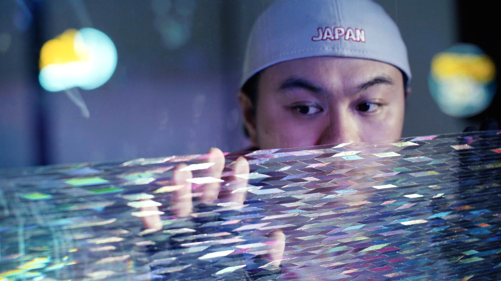
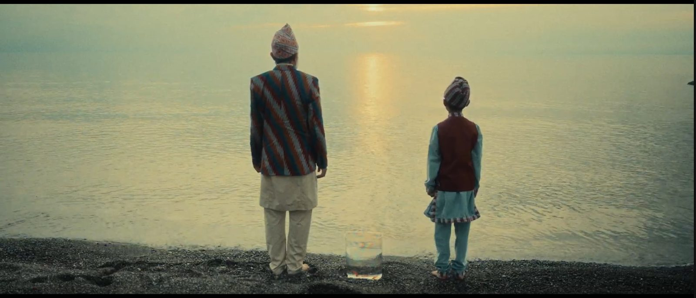
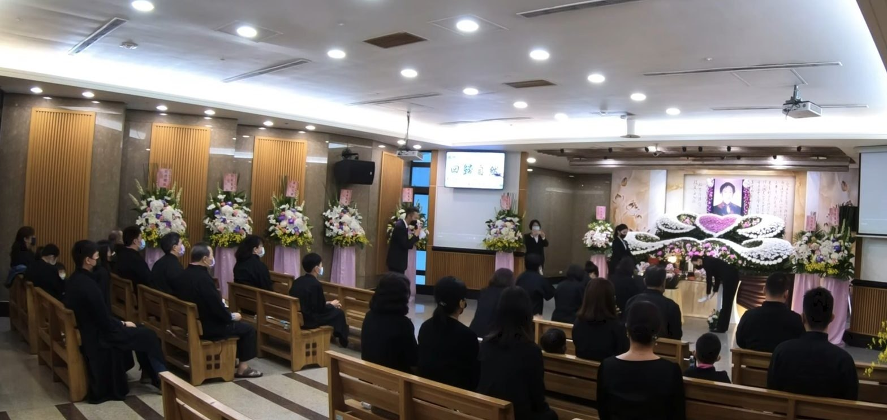
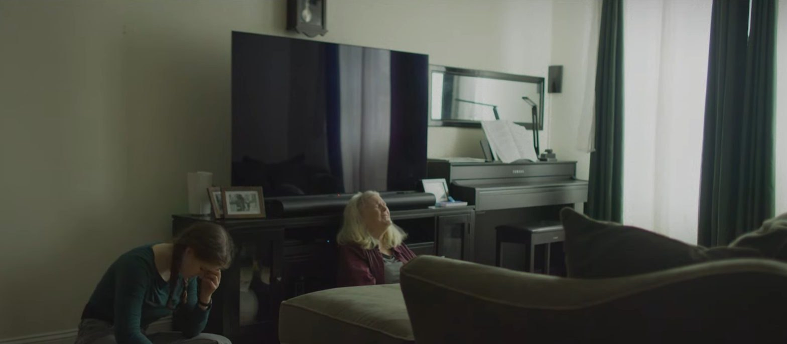
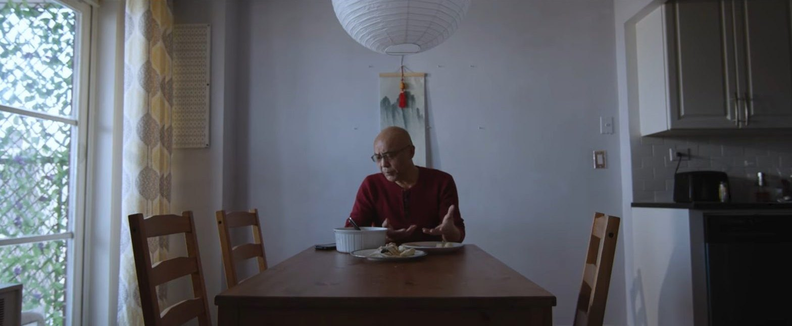

Home/Films
Films
Director, writer, cinematographer and editor on independent narrative work; director of photography on feature documentary and theatre-film. Screened at Film at Lincoln Center, Tribeca (WIP) and Fargo; supported by the Sundance Institute Documentary Fund and The Gotham.獨立敘事作品的導演、編劇、攝影與剪接；紀錄長片與劇場電影的攝影指導。作品曾於林肯中心電影協會、翠貝卡影展（WIP）與法戈影展放映，並獲日舞影展紀錄片基金與 The Gotham 支持。

A Journey of Jack (and Tom)
Two restless teens from Taiwan slip away to New York, chasing a dream of shooting a music video in Times Square—but the America they find is “slightly” nothing like the one they imagined.兩個不安分的台灣少年偷偷溜到紐約，夢想在時代廣場拍一支 MV——但他們遇見的美國，跟想像中的「稍微」有點不一樣。
Ride with Delivery Workers
A lyrical, eight-year journey alongside New York City’s immigrant food-delivery workers—predominantly Chinese—as they fight for fair working conditions and the right to ride e-bikes without fines or confiscation. From the mayor’s e-bike crackdown through legalization and the pandemic, when the same essential workers were heroized and scapegoated at once, the film follows a community organizing for resilience, dignity and justice.一段橫跨八年、如詩般的旅程，跟隨紐約市的移民外送員——多數為華人——爭取合理工作條件與合法騎乘電動自行車、不再被罰款沒收的權利。從市長的電動車掃蕩、合法化，到疫情期間這群「必要工作者」同時被歌頌又被指責，影片記錄了一個社群為韌性、尊嚴與正義而組織起來的過程。

The Snow is Singing
An eight-year-old boy in a quiet Midwestern town begins to carry the unspoken memories of his grandparents’ forced displacement from Bhutan, as renewed fears of deportation force his family to confront a past they tried to bury. Young Ishir manifests the family’s suppressed trauma through his body, dreams and behaviour, as three generations of a Nepali-speaking Bhutanese refugee family face what they never spoke of.在寧靜的美國中西部小鎮，八歲男孩開始承載祖父母被迫離開不丹、從未說出口的記憶；當被驅逐出境的恐懼再度籠罩，全家不得不面對他們試圖埋葬的過去。小男孩 Ishir 的身體、夢境與行為成了家族壓抑創傷的出口，三代尼泊爾語系不丹難民終於直視那些從未被言說的事。

A Piece of Memory
Grandma passed away when she was 95, but her presence still lingers in her house.奶奶在九十五歲那年離開了，但她的氣息仍留在那棟房子裡。

So You May Not Forget Me
Gabby, an 18-year-old who had a huge fight with her boyfriend last night, has to spend the day caring for her grandmother, who has Alzheimer’s. As she does, long-lost memories slowly emerge.十八歲的 Gabby 昨晚才跟男友大吵一架，今天卻得照顧患有阿茲海默症的奶奶。在陪伴的過程中，那些早已遺失的記憶慢慢浮現。

The Expert of Loneliness
Mr. Han, a middle-aged immigrant, invites his brother to join him for a Lunar New Year dinner. While the colleagues he also invited don’t enjoy the food, his brother—his only relative here—is preoccupied with his own family.中年移民韓先生邀請弟弟一起吃年夜飯。他同時邀來的同事們吃得興致缺缺，而弟弟——他在這裡唯一的親人——心思全在自己的家庭上。
The Team
Emma, an 11-year-old girl, wants ice cream for her birthday—but has to earn it with her own effort.十一歲的 Emma 想在生日那天吃冰淇淋——但她得靠自己的努力去換。
Miss Mermaid
Big Scene
Amid a protest movement, a woman believes that she and her fellow protesters can be extraordinary rebel heroes—but after living through the entire protest, she becomes disillusioned.在一場抗爭運動中，一名女子深信自己與同伴能成為非凡的反抗英雄——然而當她真正走完整場抗爭，卻只剩下幻滅。
View project查看作品 →It’s Relative
Chinomso meets with his close cousin, only to realize the two of them have grown far apart. Their once-strong bond, forged through decades of martial-arts practice, is tested—and he must decide whether to keep with family tradition and stay close, or break away.Chinomso 與親近的堂兄弟重逢，卻發現兩人早已漸行漸遠。數十年習武建立起的情誼受到考驗，他必須決定：是遵循家族傳統維繫關係，還是就此分道揚鑣。
The Black Side of the River
After losing her grandmother’s generational home to gentrification, 16-year-old Harriet Washington plunges into an underwater realm to ask Mami Wata for a chance to reclaim it.祖母世代相傳的老家因仕紳化而失去後，十六歲的 Harriet Washington 潛入水下世界，向水神 Mami Wata 祈求一個奪回家園的機會。
View project查看作品 →Method in the Madness

The Ones Before
Li Yan meets two women. One is the question she has always carried about who she is; the other is its answer.李燕遇見了兩個人，她們是李燕對自我身分的疑問與解答。